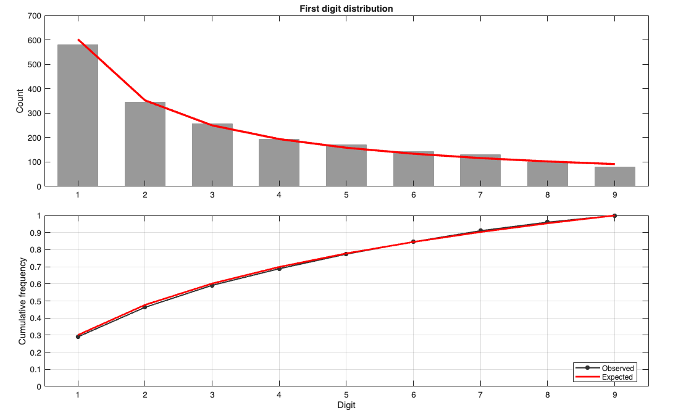
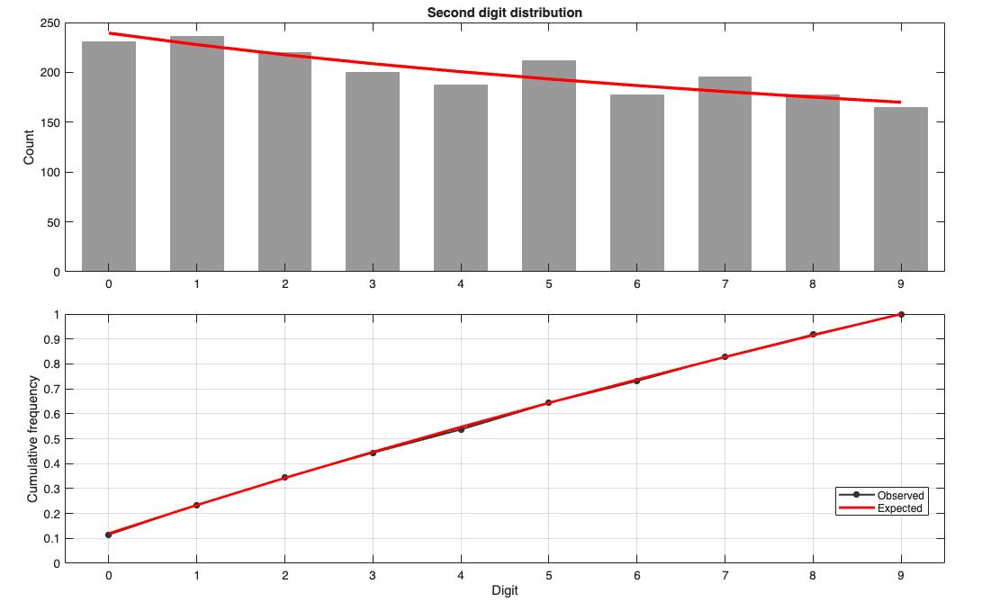
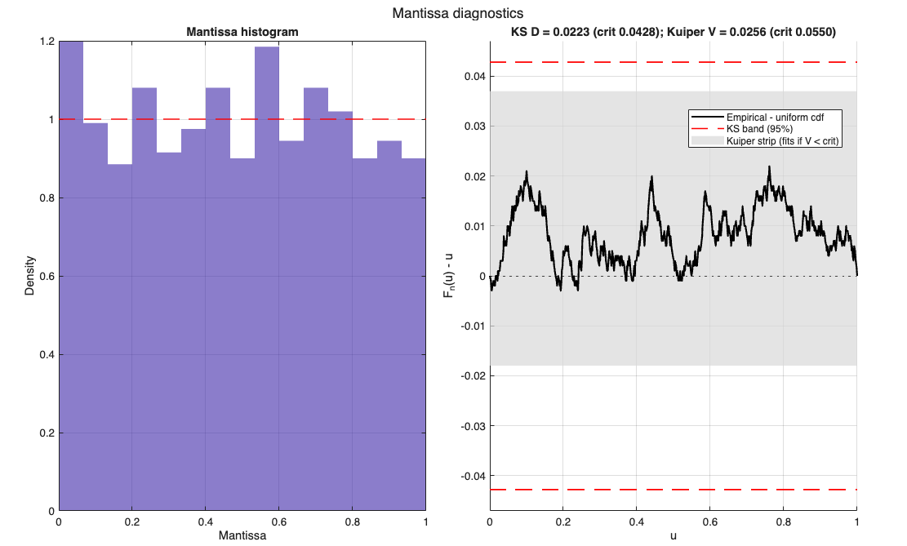
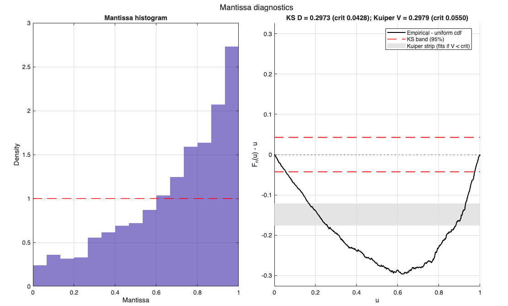
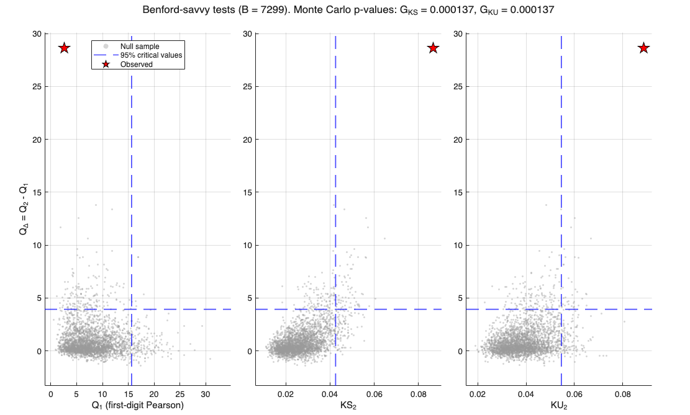
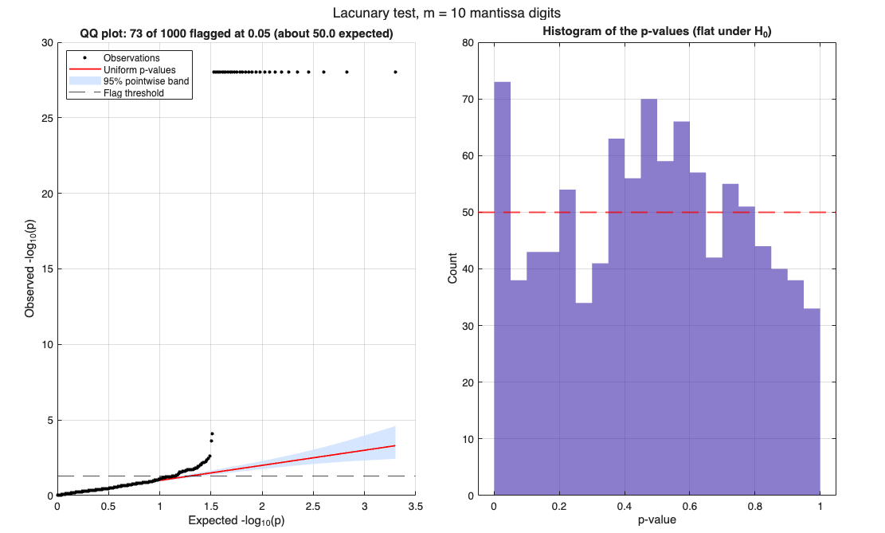

benford
Benford-law analysis for leading digits, first-two digits, and mantiss
Description
benford analyzes a positive numeric sample according to Benford's law.
The function extracts the first digit, second digit, first two digits, and mantissa, compares the observed frequencies with the Benford theoretical frequencies, and returns chi-square, two-stage, and mantissa-based test results. It can also produce comparison plots for the selected digit groups. Before the analysis, invalid observations are removed and the digit extraction is checked for consistency using independent methods.
Selecting digit groups, significance level and plots.out
=benford(x,
Name, Value)
Examples
 A clean Benford-like sample, with the default tests and plots.
A clean Benford-like sample, with the default tests and plots.
A clean Benford-like sample, with the default tests and plots.. The amounts are log-uniform over three orders of magnitude, hence exactly Benford. By default the chi-square and two-stage tests are run and the first and second digit plots are drawn. None of the tests should reject.
rng(1) V = 10.^(3*rand(2000,1)); out = benford(V);
Chi2 first digit = 6.0818, p = 0.6381, reject = 0 Chi2 second digit = 5.5021, p = 0.7885, reject = 0 Chi2 first 2 digs = 81.9536, p = 0.6888, reject = 0 Two-stage test (MAD) H1: stat = 0.0048, cv = 0.0089, p = 0.5993, reject = 0 H2: stat = 0.0045, cv = 0.0089, p = 0.7118, reject = 0 H12: stat = 0.0017, cv = 0.0020, p = 0.7646, reject = 0 Two-stage test (chi2) H1: stat = 6.0818, cv = 20.0760, p = 0.6376, reject = 0 H2: stat = 5.5021, cv = 22.2571, p = 0.7868, reject = 0 H12: stat = 81.9536, cv = 112.3517, p = 0.6898, reject = 0


Related Examples
Running silently and using the output structure.
Running silently and using the output structure.Display is suppressed and plots are disabled; results are accessed directly from the output struct.
rng(1)
V = 10.^(3*rand(2000,1));
out = benford(V,'Tests',"chi2",'Plots',false,'Display',false);
out.chi2.firstTwo % statistic, df, p-value and decision
out.counts.first % observed first-digit counts
out.expected.first % expected first-digit counts
ans =
struct with fields:
stat: 81.9536
df: 89
pValue: 0.6888
reject: 0
ans =
581
345
257
194
171
144
129
100
79
ans =
602.0600
352.1825
249.8775
193.8200
158.3625
133.8936
115.9839
102.3050
91.5150
Mantissa-based tests.
Mantissa-based tests.Include arc, mean, variance, joint, KS, U2, d*, Kuiper.
% Benford sample against a sample uniform in (1,1000), whose mantissa
% is not uniform. The mantissa plot shows the ECDF difference with the
% KS band and the Kuiper strip: the curve of the uniform sample leaves
% both. The p-values (asymptotic and Monte Carlo) are in the output.
rng(1)
Vb = 10.^(3*rand(1000,1));
Vu = 1 + 999*rand(1000,1);
outB = benford(Vb,'Tests',"mantissa",'Plots',"mantissa");
outU = benford(Vu,'Tests',"mantissa",'Plots',"mantissa");
outU.mantissaTests.kuiper
Mantissa tests
Test Statistic p_asym p_mc
Arc 0.2154 0.8979 0.9023
Mean -0.8968 0.3699 0.3789
Variance -0.3201 0.7489 0.7595
Joint 0.9066 0.6355 0.6471
KS 0.0223 0.7004 0.6973
U2 0.0298 0.9306 0.9345
d* 0.0144 NaN 0.9699
Kuiper 0.0256 0.9731 0.9712
Mantissa tests
Test Statistic p_asym p_mc
Arc 264.3459 3.963e-58 0.000137
Mean 20.8578 1.296e-96 0.000137
Variance -8.0484 8.387e-16 0.000137
Joint 499.8239 2.915e-109 0.000137
KS 0.2973 8.551e-78 0.000137
U2 7.4482 2.513e-64 0.000137
d* 0.2396 NaN 0.000137
Kuiper 0.2979 9.105e-76 0.000137
ans =
struct with fields:
stat: 0.2979
pAsym: 9.1052e-76
pMC: 1.3699e-04


Benford-savvy tests: only the first digit mimics Benford's law.
Benford-savvy tests: only the first digit mimics Benford's law.The first digit is Benford but the fractional part of the significand is uniform (manipulated-Benford scheme). The first-digit Pearson statistic Q1 is within its null range, whereas Q_Delta, KS2, KU2 and the combined tests G_KS and G_KU typically reject. The savvy plot shows the observed point against the Monte Carlo null sample.
rng(1)
n = 1000;
V = floor(10.^rand(n,1)) + rand(n,1);
out = benford(V,'Tests',["chi2","savvy"],'Plots',"savvy");Benford-savvy tests (n = 1000, B = 7299) Test Statistic p_asym p_mc Q1 2.5578 0.959 0.9641 Q2 31.1698 0.0002768 0.000411 KS2 0.0866 5.473e-07 0.000137 KU2 0.0887 7.662e-06 0.000137 Q_Delta 28.6120 8.843e-08 0.000137 G_KS 0.0001 NaN 0.000137 G_KU 0.0001 NaN 0.000137 Chi2 first digit = 2.5578, p = 0.959, reject = 0 Chi2 second digit = 41.7376, p = 3.67e-06, reject = 1 Chi2 first 2 digs = 106.6178, p = 0.09827, reject = 0

Lacunary single-observation test: flagging individual observations.
Lacunary single-observation test: flagging individual observations.30 amounts are exact powers of ten, whose mantissa is exactly zero (all the digits are 0): they are flagged with a tiny p-value. About alpha*n further observations are flagged by chance, as the QQ plot of the p-values shows (points above the band are not explained by chance). LacunaryM is the number of mantissa digits used.
rng(1)
V = 10.^(3*rand(1000,1));
idx = randperm(1000,30);
V(idx) = 10.^randi([1 3],30,1);
out = benford(V,'Tests',"lacunary",'LacunaryM',10,'Plots',"lacunary");
all(ismember(idx,out.lacunary.idxReject)) % true: all are flagged
V(out.lacunary.idxReject(1:5))
Lacunary single-observation test (m = 10 digits, chi2 with 18 df)
Observations flagged at alpha = 0.05: 73 of 1000 (about 50.0 expected under H0)
Binomial p-value for the number of flagged observations: 0.001006
ans =
logical
1
ans =
1.0e+03 *
1.0000
1.0000
1.0000
0.9259
0.1000

Input Arguments
Output Arguments
References
Benford, F. (1938). The law of anomalous numbers. Proceedings of the American Philosophical Society, 78(4), 551-572.
Berger, A. and Hill, T.P. (2015). An Introduction to Benford's Law.
Princeton University Press, Princeton, NJ.
Nigrini, M.J. (2012). Benford's Law: Applications for Forensic Accounting, Auditing, and Fraud Detection. Wiley, Hoboken, NJ.
Barabesi, L., Cerioli, A. and Di Marzio, M. (2023). Statistical models and the Benford hypothesis: a unified framework. TEST, 32, 1479-1507.
doi:10.1007/s11749-023-00881-y
Pearson, K. (1900). On the criterion that a given system of deviations from the probable in the case of a correlated system of variables is such that it can be reasonably supposed to have arisen from random sampling. Philosophical Magazine, Series 5, 50(302), 157-175.
Nigrini, M.J. (2012), see above (use of the chi-square statistic on the digit counts, and of the MAD conformity ranges).
Barabesi, L., Cerasa, A., Cerioli, A. and Perrotta, D. (2018).
Goodness-of-fit testing for the Newcomb-Benford law with application to the detection of customs fraud. Journal of Business and Economic Statistics, 36(2), 346-358. doi:10.1080/07350015.2016.1172014
Cerioli, A., Barabesi, L., Cerasa, A., Menegatti, M. and Perrotta, D.
(2019). Newcomb-Benford law and the detection of frauds in international trade. Proceedings of the National Academy of Sciences of the USA, 116(1), 106-115. doi:10.1073/pnas.1806617115
arc test (Rayleigh test of uniformity on the circle):
Alexander, J.C. (2009). Remarks on the use of Benford's Law. Working Paper, Case Western Reserve University. SSRN 1505147.
doi:10.2139/ssrn.1505147
Rayleigh, Lord (1919). On the problem of random vibrations, and of random flights in one, two, or three dimensions. Philosophical Magazine, Series 6, 37(220), 321-347.
Mardia, K.V. and Jupp, P.E. (2000). Directional Statistics. Wiley, Chichester.
1/12), in the spirit of the digit-based conformity tests of Cerqueti, R. and Lupi, C. (2021). Some new tests of conformity with Benford's law. Stats, 4(3), 745-761. doi:10.3390/stats4030044
Kolmogorov, A.N. (1933). Sulla determinazione empirica di una legge di distribuzione. Giornale dell'Istituto Italiano degli Attuari, 4, 83-91.
Watson, G.S. (1961). Goodness-of-fit tests on a circle. Biometrika, 48(1/2), 109-114.
Kuiper, N.H. (1960). Tests concerning random points on a circle.
Proceedings of the Koninklijke Nederlandse Akademie van Wetenschappen, Series A, 63, 38-47.
Tam Cho, W.K. and Gaines, B.J. (2007). Breaking the (Benford) law:
statistical fraud detection in campaign finance. The American Statistician, 61(3), 218-223. doi:10.1198/000313007X223496
Morrow, J. (2014). Benford's law, families of distributions and a test basis. CEP Discussion Paper No. 1291, Centre for Economic Performance, London School of Economics and Political Science.
Kuiper and Watson U2 tests:
Stephens, M.A. (1970). Use of the Kolmogorov-Smirnov, Cramer-von Mises and related statistics without extensive tables. Journal of the Royal Statistical Society, Series B, 32(1), 115-122.
Barabesi, L., Cerioli, A., Cerasa, A. and Perrotta, D. (2026).
Statistical Detection of Adversarial Compliance With Benford's Law.
Statistical Analysis and Data Mining, 19(3), e70081.
doi:10.1002/sam.70081 (preprint: Robust inference under Benford's law, arXiv:2507.08650, 2025)
Barabesi, L., Cerasa, A., Cerioli, A. and Perrotta, D. (2022). On characterizations and tests of Benford's law. Journal of the American Statistical Association, 117(540), 1887-1903.
doi:10.1080/01621459.2021.1891927 (sum-invariance characterization and Hotelling statistic Q2)
Kuiper (1960), Kolmogorov (1933) and Stephens (1970), see above (KS2 and KU2 are the KS and Kuiper statistics on the fractional part of the significand).
Ferrari, D. (2026). Single-Observation Uniformity Testing under Increasing Precision via Lacunary Harmonics. arXiv:2604.27772 [stat.ME], submitted 30 April 2026.
Salem, R. and Zygmund, A. (1947). On lacunary trigonometric series.
Proceedings of the National Academy of Sciences of the USA, 33(11), 333-338. (lacunary central limit theorem underlying the chi2 null distribution)
Acknowledgements